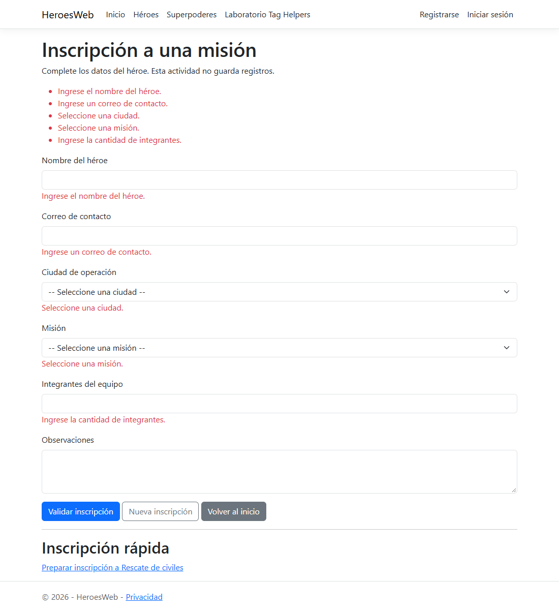
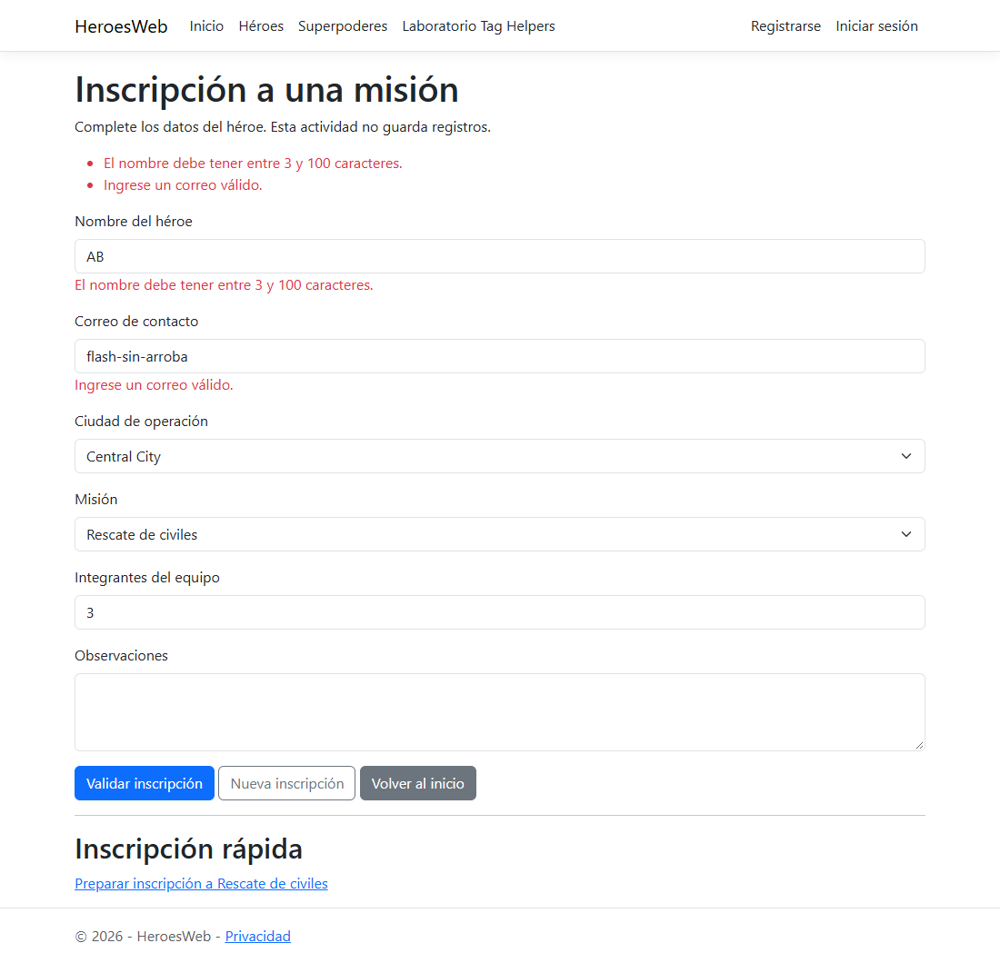
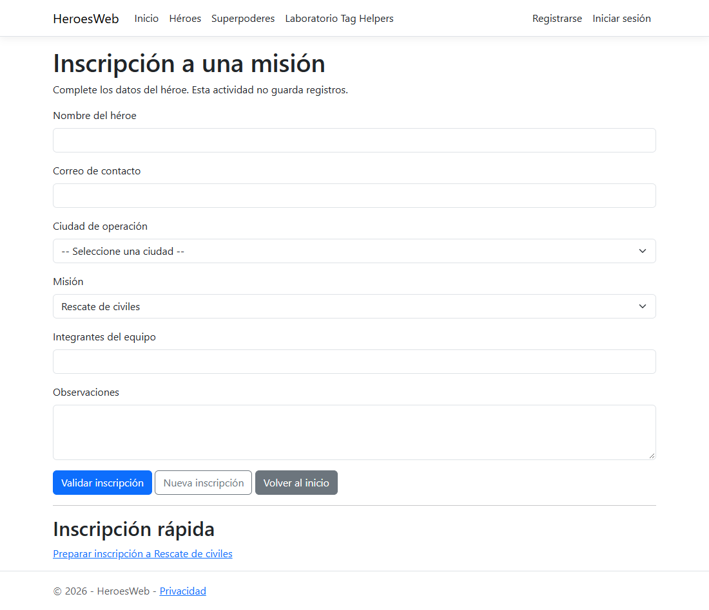
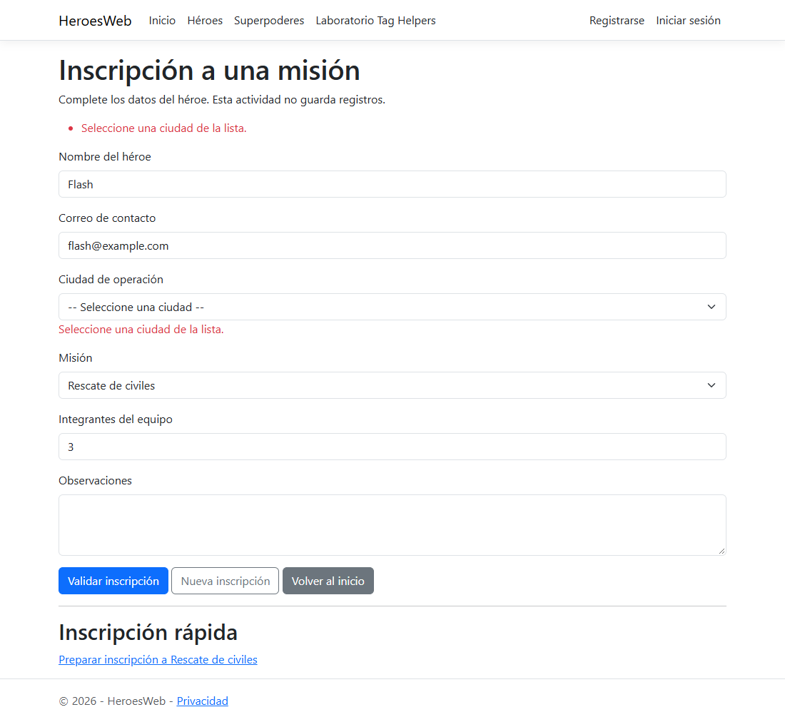
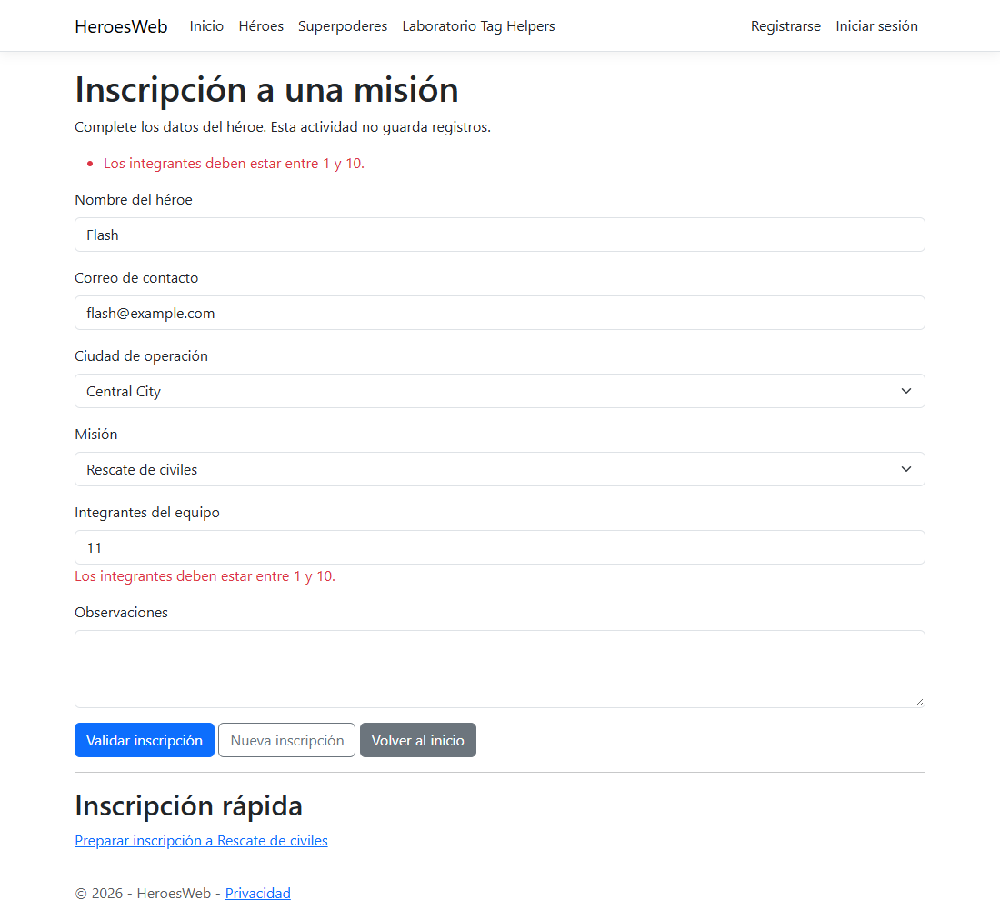
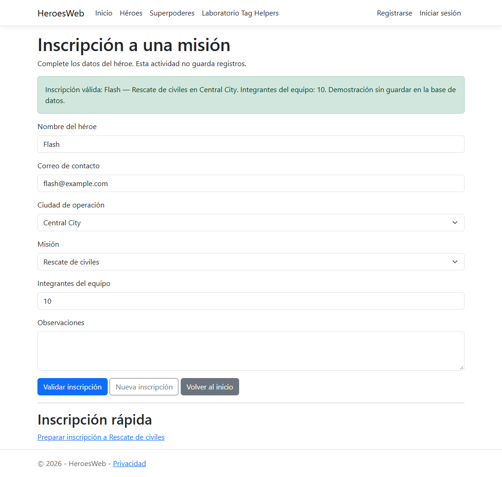

Web III · Razor Pages · Proyecto Héroes · .NET 10
Alumno: Colautti Rodriguez Nicolas
Repositorio: https://github.com/Niko1099/WebHeroes
| Qué se necesita | Carpeta | Archivo |
|---|---|---|
| Modelo del formulario | Models | InscripcionMisionInput.cs |
| PageModel | Pages/Laboratorio | Inscripcion.cshtml.cs |
| Formulario con Tag Helpers | Pages/Laboratorio | Inscripcion.cshtml |
| Menú | Pages/Shared | _Layout.cshtml (enlace "Laboratorio Tag Helpers") |
| Importación de Tag Helpers | Pages | _ViewImports.cshtml (ya tenía @addTagHelper) |
No se modificaron Program.cs, los contextos, Identity ni la conexión. El desafío adicional agrega int? Integrantes con [Required], [Range(1, 10)] y [Display(Name = "Integrantes del equipo")]; el control se genera como type="number" y el número aparece en la confirmación.
<label class="form-label" for="Inscripcion_Nombre">Nombre del héroe</label> <input class="form-control" type="text" ... id="Inscripcion_Nombre" maxlength="100" name="Inscripcion.Nombre" value=""> <input class="form-control" type="email" ... id="Inscripcion_Email" name="Inscripcion.Email" value=""> <option value="1">Rescate de civiles</option> <input class="form-control" type="number" ... id="Inscripcion_Integrantes" name="Inscripcion.Integrantes" value=""> <input name="__RequestVerificationToken" type="hidden" value="CfDJ8..."> <a href="/Laboratorio/Inscripcion?misionId=1">Preparar inscripción a Rescate de civiles</a> <form method="post" action="/Laboratorio/Inscripcion?handler=Inscribir">
| Nº | Acción | Resultado obtenido |
|---|---|---|
| 1 | Abrir el formulario desde el menú | Listas con 3 opciones cada una, empiezan sin selección |
| 2 | Enviar los campos vacíos | No se acepta; resumen y avisos de los 5 campos obligatorios |
| 3 | Nombre AB | "El nombre debe tener entre 3 y 100 caracteres." |
| 4 | Correo flash-sin-arroba | "Ingrese un correo válido."; no se acepta |
| 5 | Ciudad y misión elegidas, nombre inválido | Tras el POST las listas siguen con opciones y conservan Central City y Rescate de civiles |
| 6 | Flash, flash@example.com, Central City, Rescate de civiles | "Inscripción válida: Flash — Rescate de civiles en Central City. Integrantes del equipo: 3. …" |
| 7 | Observaciones vacías | Se acepta; es opcional |
| 8 | Nueva inscripción | GET con el formulario limpio |
| 9 | Inscripción rápida | GET ?misionId=1 con Rescate de civiles seleccionada |
| 10 | Tabla Heroes en SQL Server | Siguen los mismos 3 héroes; la actividad no agrega filas |
| — | CiudadInventada desde Elementos | El servidor la rechaza: "Seleccione una ciudad de la lista." |
| — | Integrantes: vacío, 0, 1, 10, 11 | Vacío, 0 y 11 rechazados; 1 y 10 aceptados |
Se ejecuta en el servidor, mientras Razor arma la página. El navegador nunca ve los atributos asp-...: recibe HTML común ya generado. Por ejemplo, <input asp-for="Inscripcion.Nombre"> llega como un input con type="text", id="Inscripcion_Nombre", name="Inscripcion.Nombre", maxlength="100" y sus atributos data-val-*.
Trabajan en sentidos opuestos. asp-for está en la vista y genera el HTML de salida: lee la propiedad (tipo, [Display], [Required], valor) y escribe el id, el name, el type y la validación. [BindProperty] está en el PageModel y sirve para la entrada: cuando llega el POST, el model binding toma los valores según su name y los carga en Inscripcion. asp-for decide cómo se llama cada campo; [BindProperty] usa ese nombre para llenar el objeto.
Porque el @model de la página es InscripcionModel, no InscripcionMisionInput. Nombre es una propiedad de Inscripcion, así que la ruta es Inscripcion.Nombre. Eso genera name="Inscripcion.Nombre", que coincide con la propiedad [BindProperty] Inscripcion. Con asp-for="Nombre" no compilaría, porque Model.Nombre no existe.
asp-for es el destino: la propiedad que recibe lo elegido (Inscripcion.MisionId); genera name, id, validación y marca la opción que coincide con su valor. asp-items es la fuente: la lista Model.Misiones, cuyos SelectListItem se convierten en los <option>.
Cada SelectListItem tiene Text y Value y se genera como <option value="1">Rescate de civiles</option>. El navegador muestra el texto, pero al enviar solo manda el value. El usuario lee algo entendible y el servidor recibe un dato corto y estable que puede validar con [Range(1, 3)] y que serviría como clave foránea, igual que HeroeId en SuperPoderes.
OnPostInscribir(). El Tag Helper genera action="/Laboratorio/Inscripcion?handler=Inscribir" y el formulario tiene method="post". Razor Pages busca el método por convención: On + verbo HTTP + handler. El nombre del handler no decide el verbo; eso lo hace method="post". Un GET con ?handler=Inscribir buscaría OnGetInscribir.
Porque HTTP no guarda estado: en cada solicitud se crea un InscripcionModel nuevo y las listas no viajan con el formulario, solo el valor elegido. Sin recargarlas en el POST, al volver a mostrar la página con errores los selectores quedarían vacíos. Además el POST las usa para validar la ciudad (Ciudades.Any) y obtener el nombre de la misión (Misiones.Single).
Porque la del navegador se puede saltar: desactivando JavaScript, agregando novalidate, cambiando el HTML desde F12 o mandando la petición con otra herramienta. Se comprobó enviando AB y un correo inválido sin validación del cliente, y cambiando una ciudad a CiudadInventada: el servidor rechazó ambos casos, y la regla de la ciudad ni siquiera existe en el cliente.
Agrega el parámetro misionId al enlace. Como @page no tiene un segmento {misionId}, va como query string: /Laboratorio/Inscripcion?misionId=1. Al hacer clic se hace un GET y el model binding pasa el valor al parámetro int? misionId de OnGet por coincidir el nombre. OnGet comprueba que esté entre 1 y 3 y lo asigna a Inscripcion.MisionId, por eso la misión aparece seleccionada.
DbSet en HeroesContext e inyectar el contexto en InscripcionModel.OnPostInscribirAsync, después de ModelState.IsValid, pasar el input a la entidad, _context.Add(...) y await _context.SaveChangesAsync().RedirectToPage con el mensaje en TempData (POST-Redirect-GET) en lugar de return Page().AuthorizeFolder.


?misionId=1): Rescate de civiles preseleccionada.

